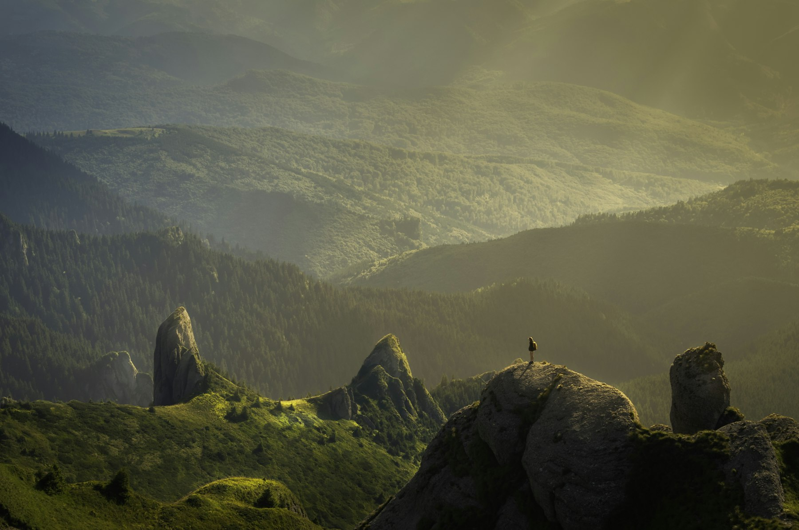
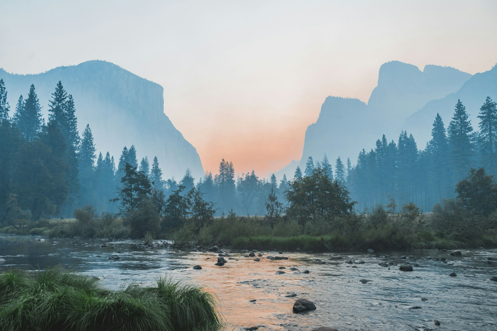
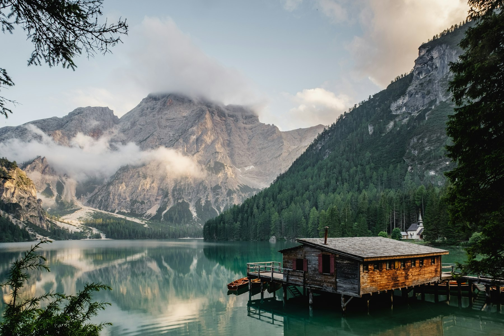
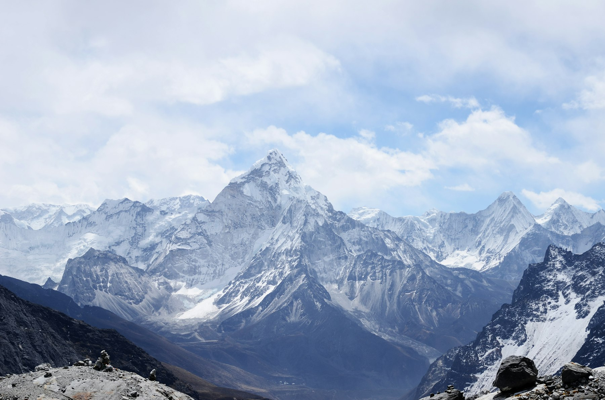
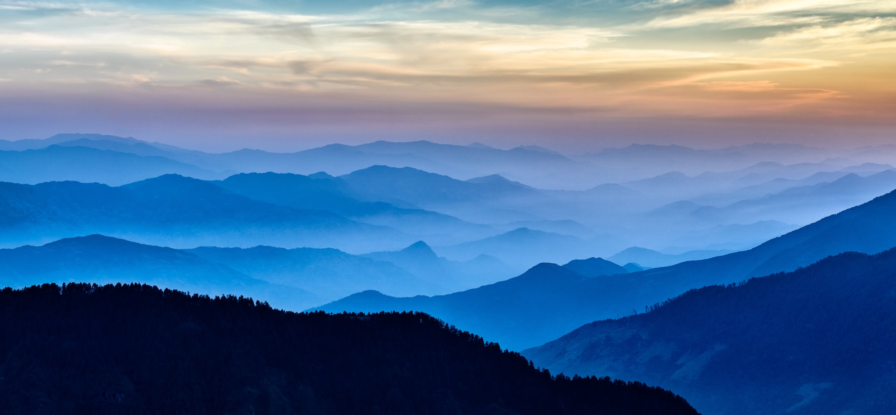

01Last Light, Wheat Country
Tuscany, Italy

02Morning Fog, Cascades
Washington, USA

03The Cabin at Dawn
Banff, Canada
 04
04
Edge of the World
Big Sur, USA

05The Long Way Home
Dolomites, Italy

06Wind Lines
Namibia